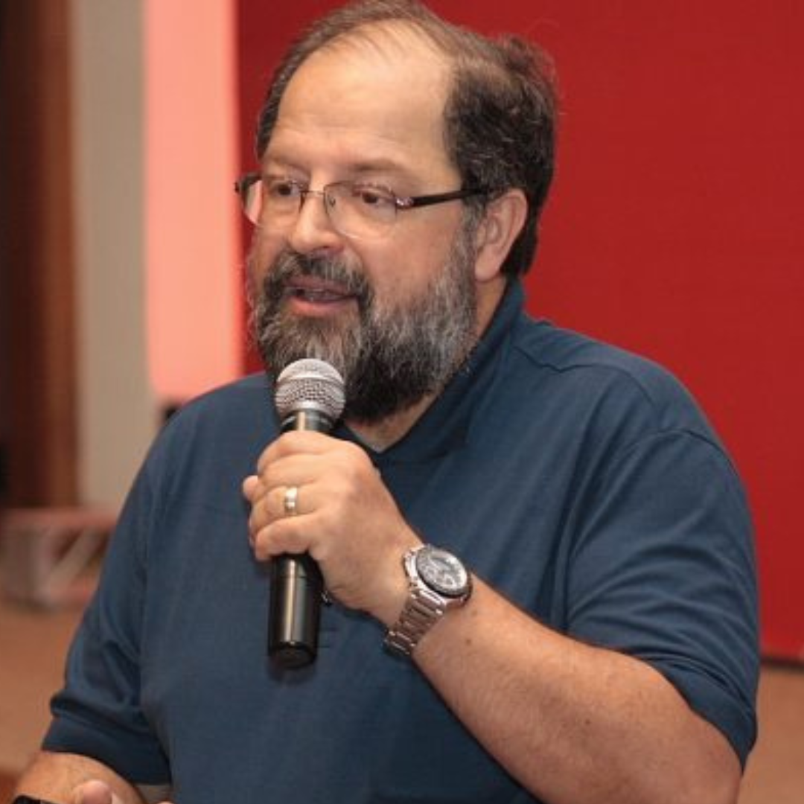

SECITEC

MUITO PRAZER,
SOU MARCUS DE ALMEIDA
Marcus de Almeida Gomes retorna à SECITEC do Campus IFBA Brumado como uma presença ainda mais impactante.
Sua expertise consolidada na área de socialização irá iluminar o evento, oferecendo uma visão privilegiada das tendências e desafios que moldarão o futuro.
